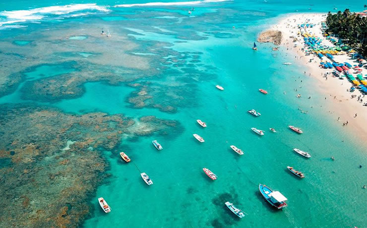
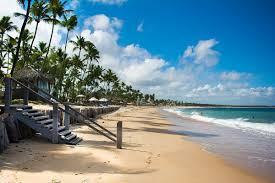

Pontos turísticos de Pernambuco

|
RECIFE | PORTO DE GALINHAS | FERNANDO DE NORONHA |
|---|
PORTO DE GALINHAS (IPOJUCA)

Porto de Galinhas é considerado um dos melhores pontos turísticos de Pernambuco e atualmente é o mais procurado pelos turistas.
A cidade que antigamente era coadjuvante no turismo nordestino foi revitalizada e se tornou um pólo turístico com
a chegada de restaurantes, hotéis e resorts.
Hoje, Porto de Galinhas atrai visitantes do mundo todo que ficam encantados com sua natureza exuberante e com suas piscinas
naturais de águas mornas. E aí? Tá esperando o quê pra conhecer esse paraíso?
Piscinas Naturais
Pra quem gosta de águas calmas e mornas e está procurando tranquilidade Porto de Galinhas é o destino ideal. Lá você vai encontrar várias piscinas naturais de águas transparentes, ideal para um mergulho. Além disso, você ainda pode fazer um mergulho com os peixinhos. Imperdível! Só fique de olho na maré, pois quando ela estiver muito baixa as piscinas podem ficar vazias. Região de Maracaípe
Pertinho de Porto de Galinhas, há apenas 3,5 quilômetros está a Praia de Maracaípe, um local paradisíaco e ainda pouco frequentado pelos turistas, então se você está querendo curtir um dia de praia com tranquilidade vai adorar o local. Lá além do mar quente e calmo, você vai encontrar alguns bares e restaurantes. Entre os mais famosos estão: Bar do Marcão e o Bar do Galo. Uma dica é experimentar os camarões australianos que vêm acompanhados de abacaxi. Outra dica para aproveitar ao máximo esse ponto turístico de Pernambuco é fazer um passeio de jangada pelo Rio Maracaípe e ver de perto o estuário de cavalo marinho. Inesquecível!